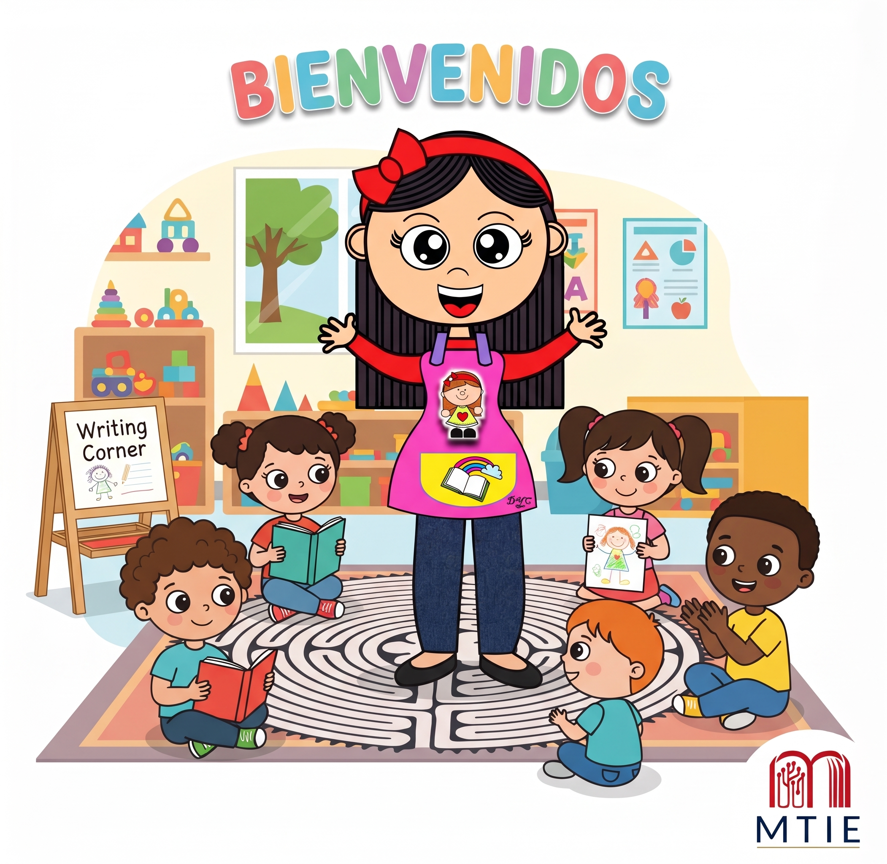

REPASO LÚDICO DE LECTOESCRITURA INICIAL: APRENDIENDO CON LA MAESTRA SALMA
Autora: Salma Xcaret Rodríguez Delgado

¡Bienvenidos a nuestro espacio interactivo de aprendizaje!Este objeto de aprendizaje ha sido diseñado como un recurso digital dinámico, interactivo y flexible para repasar y consolidar los cinco pilares formativos abordados en el blog educativo "Aprendiendo con la Maestra Salma".
Propósito del recurso
Brindar a las familias y educadores herramientas pedagógicas, lúdicas y socioemocionales para acompañar con éxito y sin frustraciones el inicio de la lectura y la escritura en niñas y niños de preescolar, respetando sus ritmos madurativos y favoreciendo el juego como vía principal de aprendizaje.
Instrucciones generales de navegación:
- Menú de navegación: Utiliza el menú lateral izquierdo para recorrer secuencialmente cada uno de los cinco temas del recurso.
- Lectura reflexiva: Al inicio de cada tema encontrarás una breve cápsula informativa; léela con atención antes de pasar a las actividades.
- Actividades interactivas: En cada sección resolverás dos retos prácticos (cuestionarios, dinámicas de relacionar, arrastrar palabras o verdadero y falso). Al responder, revisa siempre la retroalimentación formativa para reforzar tus conocimientos.
- Videos interactivos: Presta atención a las paradas interactivas que surgirán durante la reproducción de los videos en los Temas 4 y 5 para comprobar lo aprendido.